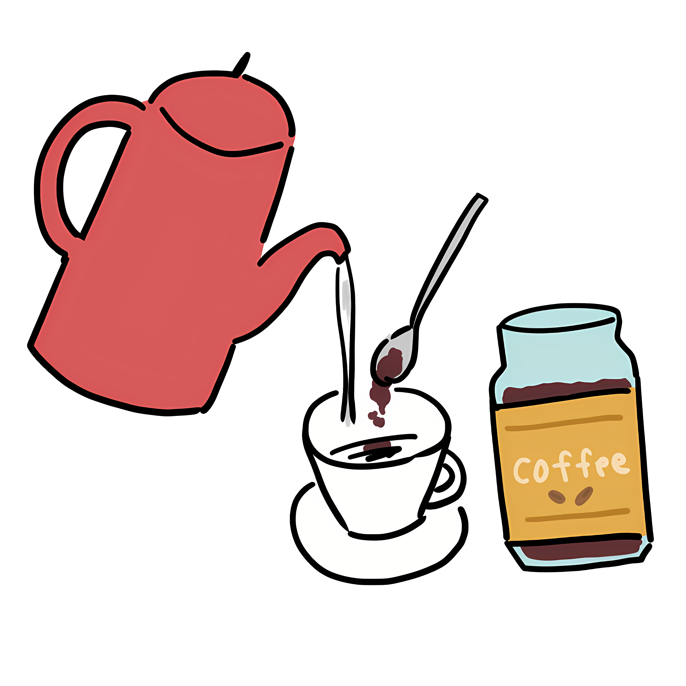
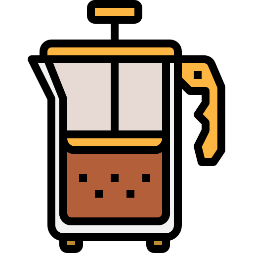

Pour-Over
Pour hot water over coffee grounds in a filter. Known for its clean and bright flavor.
French Press
A full-bodied brewing method where coffee grounds are steeped in hot water and pressed.
Espresso Machine
Uses pressure to extract concentrated coffee. Ideal for making espresso and espresso-based drinks.